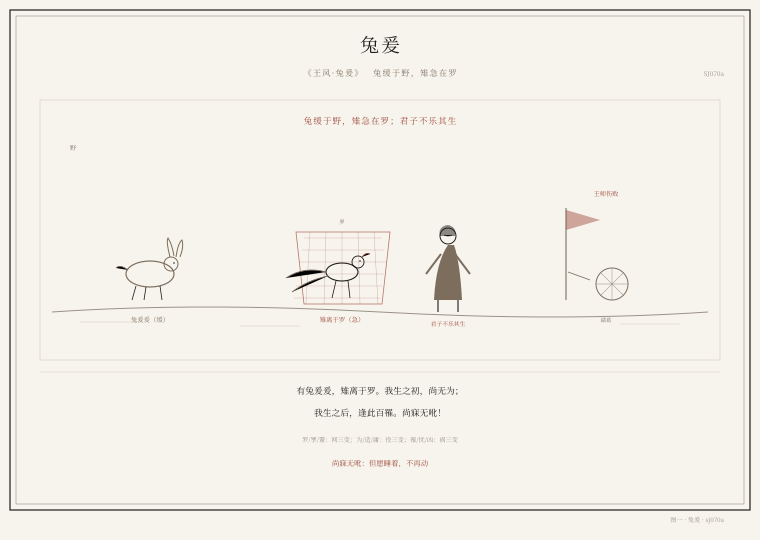
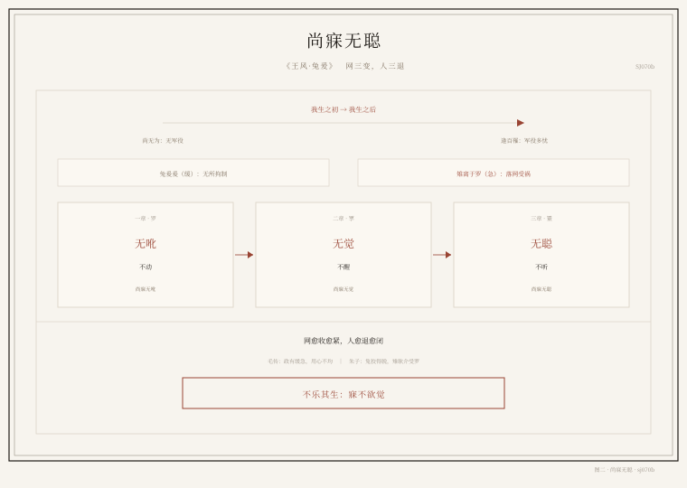

第七十篇 兔爰
王风 · 之六 SJ070
朗读 · 普通话
依经文正文朗读，句读从文；不配乐、不改速、不加拖腔。全库同一音色（豆包 TTS），非播音员录制。
一 解题
诗三判：
- 谁在说：一个在乱世里受祸的君子。诗里的「我」，是「我生之初」还见过无事之日、「我生之后」逢此百罹的人。
- 说什么事：兔在野地缓缓地走，雉却落在罗网里；一缓一急，一免一获。诗人由此说：我幼时还没有军役，长大之后却逢此百忧；但愿睡着，不再动、不再醒、不再听见。
- 为何编在此：王风第六首。前一篇《中谷有蓷》写凶年相弃，这一篇写乱世受祸；一在室家，一在邦国；都不是一人之悲，都是王政之失。
毛序：「《兔爰》，闵周也。桓王失信，诸侯背叛，构怨连祸，王师伤败，君子不乐其生焉。」
郑笺：「不乐其生者，寐不欲觉之谓也。」
毛传：「兴也。爰爰，缓意。鸟网为罗。言为政有缓有急，用心之不均。」「尚无成人为也。」「罹，忧。吪，动也。」「罦，覆车也。」「造，伪也。」「罿，罬也。」「庸，用也。」「聪，闻也。」
郑笺：「有缓者，有所听纵也；有急者，有所躁蹙也。」「尚，庶几也。言我幼稚之时，庶几于无所为，谓军役之事也。」「我长大之后，乃遇此军役之多忧。今但庶几于寐，不欲见动，无所乐生之甚。」「百凶者，王构怨连祸之凶。」
孔疏：「作《兔爰》诗者，闵周也。桓王失信于诸侯，诸侯背叛之。王与诸侯交构怨恶，连结殃祸，乃兴师出伐诸侯。诸侯御之，与之交战，于是王师伤败，国危役赋不息，使君子之人皆不乐其生焉，故作此诗以闵伤之也。」
又：「传称射王中肩，自是矢伤王身。此言师败，正谓军败耳……则知此云伤败，亦止言师败，非谓王身伤也。」
朱子《诗集传》：「比也。兔，性阴狡。爰爰，缓意。雉，性耿介。离，丽。罗，网。尚，犹。罹，忧也。尚，庶几也。吪，动也。○周室衰微，诸侯背叛。君子不乐其生，而作此诗。言张罗，本以取兔。今兔狡得脱，而雉以耿介，反离于罗。以比小人致乱，而以巧计倖免，君子无辜，而以忠直受祸也。为此诗者，盖犹及见西周之盛。故曰：方我生之初，天下尚无事。及我生之后，而逢时之多难如此。然既无如之何，则但庶几寐而不动以死耳。或曰：兴也。以兔爰兴无为，以雉离兴百罹也。下章放此。」
本库的看法：《兔爰》是一首「乱世君子」的诗。
兔缓雉急，君子不乐生；不是一只兔、一只雉，是一缓一急的世道。诗面是兔与雉，诗教是闵周；不是写禽兽，是写人。
先辨三物：兔爰不是「兔爱」，爰爰是缓意；离不是「离开」，是丽、罹，遭；罗不是「罗列」，是鸟网；罦、罿不是「罘」「冲」，都是覆车网；为、造、庸不是「无为」「创造」「平庸」，都指军役、劳役；罹不是「罹难」一个词，是忧；吪不是「讹」，是动；觉不是「睡觉」，是醒；聪不是「聪明」，是听；尚不是「尚且」，是庶几、但愿；王师伤败不是「王受伤」，是军队战败。
二 经文
第一章
有兔爰爰，雉离于罗。我生之初，尚无为；我生之后，逢此百罹。尚寐无吪！
第二章
有兔爰爰，雉离于罦。我生之初，尚无造；我生之后，逢此百忧。尚寐无觉！
第三章
有兔爰爰，雉离于罿。我生之初，尚无庸；我生之后，逢此百凶。尚寐无聪！
分章：三章，章七句。
三 韵读
| 一 |
罗/为/罹/吪 |
歌/支/歌/戈，平上通押 |
| 二 |
罦/造/忧/觉 |
尤/皓/尤/效，平上去通押 |
| 三 |
罿/庸/凶/聪 |
东/钟/钟/东 |
《诗本音》：罗【七歌】、为【音譌】、罹【古音罗】、吪【八戈】；罦【十八尤】、造【三十二晧】、忧【十八尤】、觉【三十六效，此章以平上去通为一韵】；罿【一东】、庸【三钟】、凶【三钟】、聪【一东】。一章「罹」古音罗，与罗、吪协；二章平上去通押；三章东钟一韵。
四 字义与名物
字义
- 兔爰——兔缓缓而行；爰爰，缓意。不是「兔爱」。
- 爰爰——缓意；不是「爱爱」。
- 离——丽、罹，遭；不是「离开」。
- 罗——鸟网；不是「罗列」。
- 罦（fú）——覆车网；可以掩兔。
- 罿（chōng）——罬，覆车网；或说施罗于车上。
- 为——作为；郑笺谓军役之事；不是「无为而治」。
- 造——为、伪；朱子「亦为也」；不是「创造」。
- 庸——用；郑笺又训「劳」；不是「平庸」。
- 罹（lí）——忧；不是「罹难」一个词。
- 吪（é）——动；不是「讹」。
- 觉——寤、醒；不是「睡觉」。
- 聪——闻、听；不是「聪明」。
- 尚——庶几、但愿；不是「尚且」。
- 百罹/百忧/百凶——多忧、多凶；不是「一百种」。
- 王师伤败——周王的军队战败；不是「王本人受伤」。
- 君子——君子之人；不是「君王」。
- 不乐其生——不觉得活着有乐趣；郑笺「寐不欲觉」。
名物
- 兔——狡兔；朱子说「性阴狡」。
- 雉——野鸡；朱子说「性耿介」。
- 罗、罦、罿——三种网；罗为鸟网，罦、罿为覆车网。
- 繻葛——郑地；桓王伐郑，王师败于此。
五 今译
第一章
有兔缓缓地走，雉却落入罗网。我年幼的时候，还没有军役；我长大之后，遇上这许多忧患。但愿睡着，不再动！
第二章
有兔缓缓地走，雉却落入覆车网。我年幼的时候，还没有劳役；我长大之后，遇上这许多忧愁。但愿睡着，不再醒！
第三章
有兔缓缓地走，雉却落入车上的网。我年幼的时候，还没有差役；我长大之后，遇上这许多凶祸。但愿睡着，不再听见！
说明：「爰爰」作「缓缓」；「离」作「落入」；「罦/罿」作「覆车网/车上的网」；「为/造/庸」作「军役/劳役/差役」；「无吪/无觉/无聪」作「不再动/不再醒/不再听见」。
六 章旨
一章：罗—无为—百罹—无吪。
兔缓，雉急；我幼时无军役，长后逢百忧；但愿睡着不动。
二章：罦—无造—百忧—无觉。
网更深一层；我幼时无劳役，长后逢百忧；但愿睡着不醒。
三章：罿—无庸—百凶—无聪。
网再深一层；我幼时无差役，长后逢百凶；但愿睡着不听。
三章合看：网三变，役三变，忧三变，睡三变。
罗、罦、罿，网愈收愈紧；为、造、庸，役愈转愈重；罹、忧、凶，祸愈积愈深；无吪、无觉、无聪，人愈退愈闭。从「不动」到「不醒」到「不听」，不是三级睡眠，是三级退出世界。
七 诗教
- 兴与比：毛传标「兴也」，以兔缓雉急喻「为政有缓有急，用心之不均」；朱子标「比也」，以兔狡得脱、雉耿介受罗，喻小人巧免、君子受祸。两读不同，指向同一件事：世道不均，受祸的往往是无辜的人。
- 观：观桓王失信、诸侯背叛、构怨连祸、王师伤败；观君子受祸；观「不乐其生」的世道。孔疏说「国危役赋不息，使君子之人皆不乐其生」，这不是一人之怨，是役赋不息之世。
- 群：可与乱世君子同群。诗不直斥王，只写兔与雉、睡与不睡；怨在物象里，痛在「尚寐」二字里。
- 怨：这首诗最重的一字，是「尚」。不是「我要睡」，是「但愿睡着，不再动、不再醒、不再听见」。乱世之痛，写到一个不想听见世界的声音。
这不是劝人求死，是写生之可乐已尽。
八 分寸与边界
- 不可把「兔爰」当「兔爱」。爰爰是缓意。
- 不可把「爰爰」当「爱爱」。爰爰是缓行自得之貌。
- 不可把「离」当「离开」。离是丽、罹，遭。
- 不可把「罗」当「罗列」。罗是鸟网。
- 不可把「罦」当「罘」的错字。罦是覆车网。
- 不可把「罿」当「冲」的错字。罿是罬、覆车网。
- 不可把「为」当「无为而治」。此处为指军役之事。
- 不可把「造」当「创造」。造是为、伪。
- 不可把「庸」当「平庸」。庸是用，郑笺又训劳。
- 不可把「罹」只当「罹难」。罹是忧。
- 不可把「吪」当「讹」的错字。吪是动。
- 不可把「觉」当「睡觉」。觉是醒。
- 不可把「聪」当「聪明」。聪是听。
- 不可把「尚」当「尚且」。尚是庶几、但愿。
- 不可把「百罹」坐实为「一百种」。百是多。
- 不可把「王师伤败」当「王本人受伤」。孔疏明说「师败，非谓王身伤也」。
- 不可把「君子」当「君王」。君子是君子之人。
- 不可把「不乐其生」读成劝人求死。它是乱世绝望之词，不是行动指令。
九 存疑
- 诗旨：毛序「闵周，桓王失信，诸侯背叛，构怨连祸，王师伤败，君子不乐其生」；朱子「周室衰微，诸侯背叛，君子不乐其生而作此诗」；毛传以「兔缓雉急」喻政有缓急，朱子以「兔狡雉耿」喻小人倖免、君子受祸。本库两存：诗面是兔与雉，诗教是闵周。
- 首二句：毛传「为政有缓有急，用心之不均」；朱子「兔狡得脱，雉以耿介反离于罗」。一读政，一读人；本库两存。
- 「为」：毛传「尚无成人为也」，郑笺「谓军役之事」。本库取军役，并存「成人所为」。
- 「造」：毛传「伪也」，朱子「亦为也」。本库取「为」，并存「伪」。
- 「庸」：毛传「用也」，郑笺「劳也」。本库取「用/劳」，两存。
- 「觉」：朱子「寤也」。本库取「醒」，与「寐」相对。
- 「聪」：毛传「闻也」。本库取「听」。
- 「王师伤败」：孔疏「师败，非谓王身伤也」。本库从之。
- 诗作年代：孔疏以桓王时；本库从之。
- 「兔爰」是否兴：朱子「或曰兴也，以兔爰兴无为，以雉离兴百罹」。本库并存兴、比两读。
十 跨典
- 《王风·中谷有蓷》：前一篇。凶年相弃，此篇乱世受祸；一「何嗟及矣」，一「尚寐无吪」。一在室家，一在邦国。
- 《王风·黍离》：故都禾黍，此篇王师伤败；一「此何人哉」，一「尚寐无聪」。一伤宗周之亡，一伤桓王之败。
- 《左传·隐三年》：周郑交质，「信不由中，质无益也」。桓王失信之事，孔疏引以说此篇。
- 《左传·桓五年》：繻葛之战，王师败，祝聃射王中肩。孔疏说「师败，非谓王身伤也」。
- 《论语·卫灵公》：「君子哉蘧伯玉！邦有道则仕，邦无道则可卷而怀之。」乱世君子，与此篇「不乐其生」同一底色。
- 《小雅·正月》：「民之无辜，并其臣仆。」无辜受祸，正是朱子「君子无辜，而以忠直受祸」的旧声。
十一 双卡与图
双卡十六对：
| 兔爰（兔缓行） |
兔爰（兔爱，误） |
| 爰爰（缓意） |
爰爰（爱爱，误） |
| 离（丽/罹，遭） |
离（离开，误） |
| 罗（鸟网） |
罗（罗列，误） |
| 罦（覆车网） |
罦（罘字，误） |
| 罿（罬/覆车网） |
罿（冲字，误） |
| 为（军役之事） |
为（无为而治，误） |
| 造（为/伪） |
造（创造，误） |
| 庸（用/劳） |
庸（平庸，误） |
| 罹（忧） |
罹（罹难，误） |
| 吪（动） |
吪（讹字，误） |
| 觉（醒） |
觉（睡觉，误） |
| 聪（听） |
聪（聪明，误） |
| 尚（庶几/但愿） |
尚（尚且，误） |
| 王师伤败（军队败） |
王师伤败（王受伤，误） |
| 君子（君子之人） |
君子（君王，误） |

图一 · 兔爰 兔缓于野，雉急在罗

图二 · 尚寐无聪 网三变，人三退
读图三处：
- 兔与雉：图一，兔在野地缓缓地走，雉在网中急急地挣；一缓一急，是世道的不均。
- 网与役：图一，罗、罦、罿三种网，对应为、造、庸三种役；网愈收愈紧，役愈转愈重。
- 三无：图二，无吪、无觉、无聪，从「不动」到「不醒」到「不听」；不是睡觉，是退出世界。